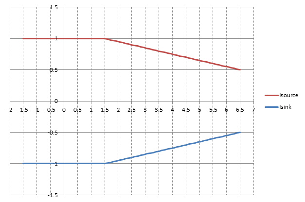

DC Scale DPS128 / DPS64 card
| Supported V93000 systems : EXA Scale (SmarTest 7+8), Smart Scale (SmarTest 7+8) |
Mandatory force-sense connections
The force, sense, ground, and ground-sense lines of the DPS128/DPS64 have specific connection requirements.
In order to operate the DPS128/DPS64, you must connect both the force line to the sense line and the ground to the ground-sense line. Make the connection as close as possible to the DUT.
For standard force operation the force/sense voltage limiter binds sense and force within 1 V. When operating in the high impedance measurement mode, the limiter block is shorted and the force-sense floats.
High accuracy current force mode (FI mode)
For proper operation, the FI mode (high accuracy force current mode) requires at least 1 Ω total additional resistive load (incl. DUT) in the force path.
If the DPS128-HC channel is used in force current mode with low load impedances (< 2 Ω), we recommend adding a 1 Ω resistor into the force path before the force-sense connection to avoid possible oscillations. By adding this resistor to the force path the output voltage range of the DPS128-HC gets smaller. The graphic shows the maximum possible output current vs. output voltage by adding the resistor.

See also the technical specifications for DC Scale DPS128-HC and DC Scale DPS128-HV.
Minimum capacitance requirements
The minimum required capacitance is 1 nF to 10 nF close to the pogo pin location. This applies to both the DPS128-HC and the DPS128-HV. For further details see DPS128 / DPS64 capacitor requirements.
An external load capacity results in improved DPS stability, in reduced oscillations, and in reduced noise. When operating in DPS mode, DPS128/DPS64 cards generally require a load capacity. The requirements differ for HC and HV channels:
- for high current (HC) channels: 1 μF to 100 μF
- for high voltage (HV) channels: 100 nF to 4.7 μF
If you make use of the DUT interface of the Twinning solution, the capacitance shall be placed both on the family board and the DUT daughter board observing the rules of this section. The capacity figure in terms of Farad for the capacitors shall be the same as given above for the DUT board, both for the capacitor of the family board, and the DUT daughter board.
See also the technical specifications for DC Scale DPS128-HC and DC Scale DPS128-HV.
DPS128 power budget
The DPS128/DPS64 card features two power domains with a dedicated power budget. Each domain is able to deliver half of the overall power budget. The power domain to channel mapping must be observed for DPS128 cards when assigning the available channels to the DUT pins. For more information refer to DPS128/DPS64 power budget.
Functional changes
- Introduced in SmarTest 7.2.1